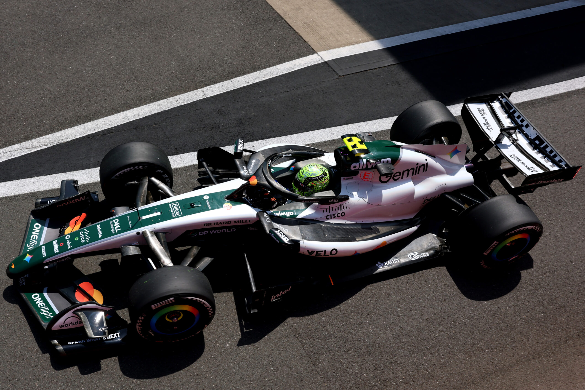

Silverstone • 4/07/2026"In a pickle" - Lando Norris
Lando Norris discusses McLaren's challenges and the team's performance at Silverstone.
F1 Opinion • McLaren • Driver Market
Lando Norris discusses McLaren's challenges and the team's performance at Silverstone.
Read featured articleNEXT FEATURE
Newsroom

Silverstone • 4/07/2026Lando Norris discusses McLaren's challenges and the team's performance at Silverstone.
 Opinion
Opinion
A quick look at the rumours and why a shock switch looks unlikely right now.
 Engineering
Engineering
Gianpiero Lambiase will leave Red Bull Racing in 2028 and take a new spot in McLaren as Chief Racing Officer.
Browse
Looking for older articles? Browse the full archive of previous F1 stories.
View Earlier Stories →2026 Season
Hi, I'm Azra. I write about Formula 1, driver rumours, team dynamics, and race weekends. This site is my personal motorsport journalism space.